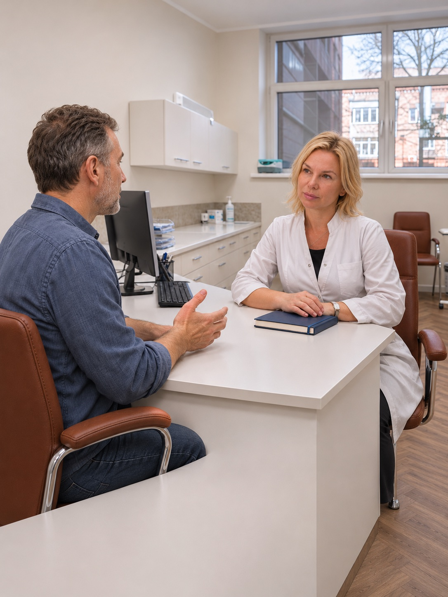

Центр сучасної неврології
Діагностика, лікування та реабілітація під керівництвом Наталії Валеріївни Томах.

Рекламна візуалізація на основі фотографій клінікиЦентр сучасної неврології Breoris Medical працює під керівництвом Наталії Валеріївни Томах — кандидата медичних наук, доцента, лікаря-невролога вищої категорії.
Центр спеціалізується на комплексній діагностиці, лікуванні та реабілітації пацієнтів із захворюваннями нервової системи.
Наші фахівці працюють із головним болем і мігренню, запамороченням, болем у спині та шиї, порушеннями чутливості, а також складними неврологічними захворюваннями — розсіяним склерозом, хворобою Паркінсона, епілепсією та судинними патологіями головного мозку.
Основа нашої роботи — мультидисциплінарний підхід, що об’єднує досвід неврологів, лікаря фізичної та реабілітаційної медицини й інших спеціалістів.
Від діагностики до індивідуального плану лікування та відновлення — з увагою до якості життя кожного пацієнта.
Обговоріть ваш запит з адміністратором
Записатися за телефоном ↗+380 97 532 36 64